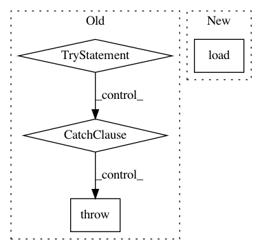

d750d66fb998a44316000908f213ae73c53de97f,examples/shrec17/dataset.py,CacheNPY,__call__,#CacheNPY#Any#,194
Before Change
except OSError: exists[i] = False
print("transform...", end="\r")
try:
img = self.transform(file_path)
except:
print(file_path)
raise
np.save(npy_path.format(exists.index(False)), img)
return img
After Change
output = []
for i in range(self.repeat):
try:
img = np.load(npy_path.format(i))
except (OSError, FileNotFoundError):
img = self.check_trans(file_path)
np.save(npy_path.format(i), img)
output.append(img)
In pattern: SUPERPATTERN
Frequency: 3
Non-data size: 4
Instances
Project Name: jonas-koehler/s2cnn
Commit Name: d750d66fb998a44316000908f213ae73c53de97f
Time: 2018-03-03
Author: geiger.mario@gmail.com
File Name: examples/shrec17/dataset.py
Class Name: CacheNPY
Method Name: __call__
Project Name: NeuromorphicProcessorProject/snn_toolbox
Commit Name: fbe35962f59485f6757060330cd45529c919eb5b
Time: 2017-11-23
Author: bodo.rueckauer@gmail.com
File Name: snntoolbox/simulation/target_simulators/INI_temporal_pattern_target_sim.py
Class Name: SNN
Method Name: load
Project Name: loli/medpy
Commit Name: 973876881f7885f4bfebe72f4cd1ccc46046b0cc
Time: 2013-04-19
Author: maier@humbug.imi.uni-luebeck.de
File Name: bin/medpy_extract_sub_volume_auto.py
Class Name:
Method Name: main